Fieldwork Analysis
ONEILL
10/11/2019
library(tidyverse)## -- Attaching packages ---------------------------------------------------------------------------------------------------------------------- tidyverse 1.2.1 --## v ggplot2 3.2.1 v purrr 0.3.2
## v tibble 2.1.3 v dplyr 0.8.3
## v tidyr 0.8.3 v stringr 1.4.0
## v readr 1.3.1 v forcats 0.4.0## -- Conflicts ------------------------------------------------------------------------------------------------------------------------- tidyverse_conflicts() --
## x dplyr::filter() masks stats::filter()
## x dplyr::lag() masks stats::lag()library(lubridate)##
## Attaching package: 'lubridate'## The following object is masked from 'package:base':
##
## datelibrary(BIOMASS)
library(ape)
library(ggplot2)
library(tidyverse)
library(dplyr)
library(ggplot2)
library(stringr)
library(maps)##
## Attaching package: 'maps'## The following object is masked from 'package:purrr':
##
## maplibrary(mapdata)
library(maptools)## Loading required package: sp## Checking rgeos availability: FALSE
## Note: when rgeos is not available, polygon geometry computations in maptools depend on gpclib,
## which has a restricted licence. It is disabled by default;
## to enable gpclib, type gpclibPermit()library(sp)
library(raster)##
## Attaching package: 'raster'## The following objects are masked from 'package:ape':
##
## rotate, zoom## The following object is masked from 'package:dplyr':
##
## select## The following object is masked from 'package:tidyr':
##
## extractlibrary(BIOMASS)
library(ape)
library(magrittr)##
## Attaching package: 'magrittr'## The following object is masked from 'package:raster':
##
## extract## The following object is masked from 'package:purrr':
##
## set_names## The following object is masked from 'package:tidyr':
##
## extractlibrary(tinytex)
library(raster)
library(rgdal)## rgdal: version: 1.4-4, (SVN revision 833)
## Geospatial Data Abstraction Library extensions to R successfully loaded
## Loaded GDAL runtime: GDAL 2.2.3, released 2017/11/20
## Path to GDAL shared files: C:/Users/kyaws/Documents/R/win-library/3.6/rgdal/gdal
## GDAL binary built with GEOS: TRUE
## Loaded PROJ.4 runtime: Rel. 4.9.3, 15 August 2016, [PJ_VERSION: 493]
## Path to PROJ.4 shared files: C:/Users/kyaws/Documents/R/win-library/3.6/rgdal/proj
## Linking to sp version: 1.3-1library(measurements)
library(lme4)## Loading required package: Matrix##
## Attaching package: 'Matrix'## The following object is masked from 'package:tidyr':
##
## expandlibrary(bbmle)## Loading required package: stats4##
## Attaching package: 'bbmle'## The following object is masked from 'package:dplyr':
##
## sliceField_Data <- read.csv("Data/Popa_Fieldwork/Popa_Fieldwork(23-10-2019).csv", stringsAsFactors = F)
Field_Data <- Field_Data %>%
mutate(Forest_type = case_when(Plot >= 14 ~ 'Evergreen_Forest',
Plot >= 7 ~ 'Moist_Mixed_Deciduous_Forest',
Plot >= 4 ~ 'Dry_Mixed_Deciduous_Forest',
Plot >= 1 ~ 'Dry_Forest'
))Checking typos in taxonomy
Taxo <- correctTaxo(genus=Field_Data$Genus, species = Field_Data$Species)## Cache last modification time : 2019-11-12 10:09:17## Source cache:623, NA:4## Corrections TRUE:197, FALSE:405, SpNotFound:6, NA:4, NoMatch(low_score):15Field_Data$genusCorr <- Taxo$genusCorrected
Field_Data$speciesCorr <- Taxo$speciesCorrectedRetrieving APG III Families and Orders from Genus names
APG <- getTaxonomy(Field_Data$genusCorr, findOrder = T)
Field_Data$familyAPG <- APG$family
Field_Data$orderAPG <- APG$orderRETRIEVE WOOD DENSITY
dataWD <- getWoodDensity(genus=as.character(Field_Data$genusCorr),
species=as.character(Field_Data$speciesCorr),
stand=Field_Data$Plot)## The reference dataset contains 16467 wood density values## Your taxonomic table contains 65 taxasum(dataWD$levelWD == "species")## [1] 394sum(dataWD$levelWD == "genus")## [1] 214sum(!dataWD$levelWD%in%c("genus","species"))## [1] 19Field_Data$WD <- dataWD$meanWD
str(Field_Data)## 'data.frame': 627 obs. of 21 variables:
## $ Plot : int 1 1 1 1 1 1 1 1 1 1 ...
## $ Sub_Plot : int 1 1 1 2 4 5 6 6 7 8 ...
## $ Tree_Tag : int 8999 9000 8998 8997 8996 8995 8994 8993 8992 8989 ...
## $ X_Coordinate: num 0.8 1 3.2 3 4.8 2.4 1.5 3 1.6 4.4 ...
## $ Y_Coordinate: num 2 1.7 2.5 3.9 2.1 1.8 2.2 4 0.5 0.8 ...
## $ Local_Name : chr "Lunbo" "Tei" "Tei" "Ingyin" ...
## $ Genus : chr "Buchananaia" "Diospyros" "Diospyros" "Shorea" ...
## $ Species : chr "cochinchinensis" "burmanica" "burmanica" "siamensis" ...
## $ DBH_inch : num 6 4 4.8 14.3 6.9 4 4 4.9 4.2 8.3 ...
## $ DBH_cm : num 15.2 10.2 12.2 36.3 17.5 ...
## $ POM_m : num 1.3 1.3 1.3 1.3 1.3 1.3 1.3 1.3 1.3 1.3 ...
## $ Height_m : num 6 6 7 12 6.7 8 5.1 6 5.7 10 ...
## $ North : chr "20 53 0.33" "20 53 0.33" "20 53 0.33" "20 53 0.33" ...
## $ East : chr "95 13 0.56" "95 13 0.56" "95 13 0.56" "95 13 0.56" ...
## $ Elevation_m : num 364 364 364 364 364 ...
## $ Forest_type : chr "Dry_Forest" "Dry_Forest" "Dry_Forest" "Dry_Forest" ...
## $ genusCorr : chr "Buchanania" "Diospyros" "Diospyros" "Shorea" ...
## $ speciesCorr : chr "cochinchinensis" "burmanica" "burmanica" "siamensis" ...
## $ familyAPG : chr "Anacardiaceae" "Ebenaceae" "Ebenaceae" "Dipterocarpaceae" ...
## $ orderAPG : chr "Sapindales" "Ericales" "Ericales" "Malvales" ...
## $ WD : num 0.409 1.095 1.095 0.86 0.77 ...Computing AGB
AGBtree<-computeAGB(D=Field_Data$DBH_cm,
WD=Field_Data$WD,
H = Field_Data$Height_m)
# Compute AGB(Mg) per tree----
Field_Data$AGB_Mg <- AGBtree
# Compute Carbon (Mg) per tree --
Field_Data <- Field_Data %>%
mutate(Carbon_Mg= AGB_Mg*0.47) %>% mutate(C_Tree_Ha = Carbon_Mg/0.04)
str(Field_Data)## 'data.frame': 627 obs. of 24 variables:
## $ Plot : int 1 1 1 1 1 1 1 1 1 1 ...
## $ Sub_Plot : int 1 1 1 2 4 5 6 6 7 8 ...
## $ Tree_Tag : int 8999 9000 8998 8997 8996 8995 8994 8993 8992 8989 ...
## $ X_Coordinate: num 0.8 1 3.2 3 4.8 2.4 1.5 3 1.6 4.4 ...
## $ Y_Coordinate: num 2 1.7 2.5 3.9 2.1 1.8 2.2 4 0.5 0.8 ...
## $ Local_Name : chr "Lunbo" "Tei" "Tei" "Ingyin" ...
## $ Genus : chr "Buchananaia" "Diospyros" "Diospyros" "Shorea" ...
## $ Species : chr "cochinchinensis" "burmanica" "burmanica" "siamensis" ...
## $ DBH_inch : num 6 4 4.8 14.3 6.9 4 4 4.9 4.2 8.3 ...
## $ DBH_cm : num 15.2 10.2 12.2 36.3 17.5 ...
## $ POM_m : num 1.3 1.3 1.3 1.3 1.3 1.3 1.3 1.3 1.3 1.3 ...
## $ Height_m : num 6 6 7 12 6.7 8 5.1 6 5.7 10 ...
## $ North : chr "20 53 0.33" "20 53 0.33" "20 53 0.33" "20 53 0.33" ...
## $ East : chr "95 13 0.56" "95 13 0.56" "95 13 0.56" "95 13 0.56" ...
## $ Elevation_m : num 364 364 364 364 364 ...
## $ Forest_type : chr "Dry_Forest" "Dry_Forest" "Dry_Forest" "Dry_Forest" ...
## $ genusCorr : chr "Buchanania" "Diospyros" "Diospyros" "Shorea" ...
## $ speciesCorr : chr "cochinchinensis" "burmanica" "burmanica" "siamensis" ...
## $ familyAPG : chr "Anacardiaceae" "Ebenaceae" "Ebenaceae" "Dipterocarpaceae" ...
## $ orderAPG : chr "Sapindales" "Ericales" "Ericales" "Malvales" ...
## $ WD : num 0.409 1.095 1.095 0.86 0.77 ...
## $ AGB_Mg : num 0.033 0.039 0.0648 0.7292 0.0894 ...
## $ Carbon_Mg : num 0.0155 0.0183 0.0304 0.3427 0.042 ...
## $ C_Tree_Ha : num 0.387 0.459 0.761 8.568 1.05 ...Field_Data$Plot <- factor(Field_Data$Plot)
boxplot(C_Tree_Ha~Plot, data=Field_Data)
summary(aov(C_Tree_Ha ~ factor(Plot), data = Field_Data))## Df Sum Sq Mean Sq F value Pr(>F)
## factor(Plot) 19 1698 89.35 3.713 2.24e-07 ***
## Residuals 607 14608 24.07
## ---
## Signif. codes: 0 '***' 0.001 '**' 0.01 '*' 0.05 '.' 0.1 ' ' 1Field_Carbon <- Field_Data %>%
group_by(Plot, Forest_type) %>%
dplyr::summarise(Total_C = sum(C_Tree_Ha), Elevation = mean(Elevation_m)) %>% rename(Plot_Number=Plot) %>% mutate(Year=paste(2019))
ggplot(data=Field_Carbon, aes(x=as.numeric(Plot_Number),y =Total_C, color=as.numeric(Plot_Number)))+ geom_point()+ geom_line()+
labs(title = "Carbon storage in 20 Permanent sample plots",
x= "Plot",
y= "Carbon(t/ha)")+
theme(axis.text.x = element_text(size=7, angle = 0, vjust = 0.5),
axis.text.y = element_text(size = 7))
ggplot(data=Field_Carbon, aes(x=as.numeric(Plot_Number),y =Total_C, color=as.factor(Forest_type)))+ geom_boxplot()+ geom_point() labs(title = "Carbon storage in 20 Permanent sample plots as to Forest Type",
x= "Plot",
y= "Carbon(t/ha)")+
theme(axis.text.x = element_text(size=7, angle = 0, vjust = 0.5),
axis.text.y = element_text(size = 7))## NULLwrite.csv(Field_Carbon, file = "Data_Output/Field_Carbon.csv", row.names = F)hist(Field_Data$Height_m)hist(Field_Data$DBH_cm)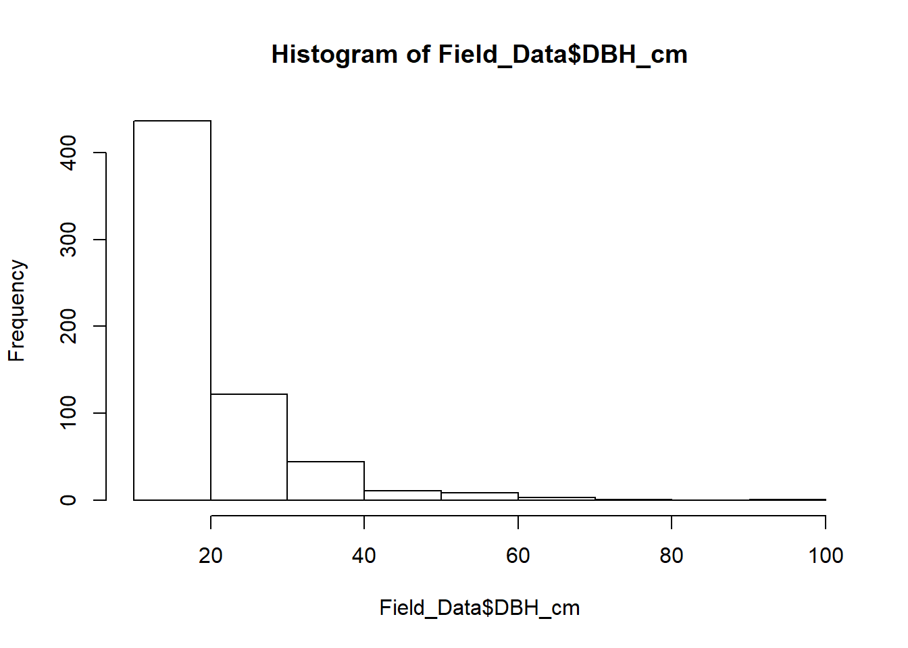
ggplot(data = Field_Data, aes(y = Height_m, x = DBH_cm)) +
geom_point(color='green') +
geom_smooth(method = "lm", se = FALSE)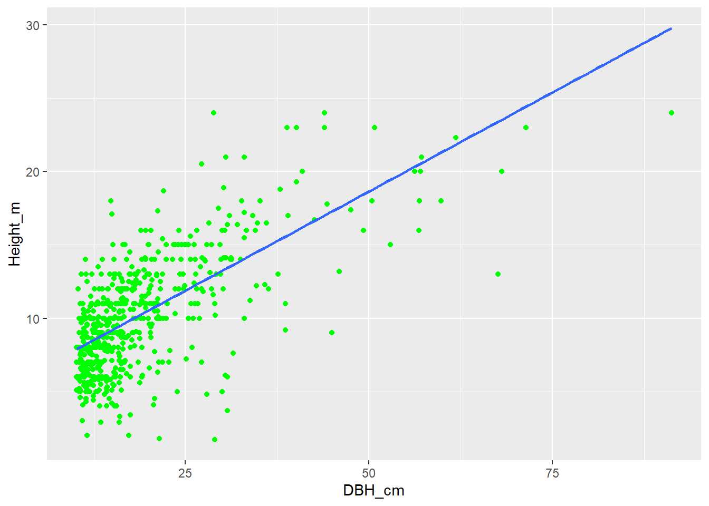 convert from decimal minutes to decimal degrees
# Field_Data <- read.csv("Data/Popa_Fieldwork/Popa_Fieldwork(23-10-2019).csv", stringsAsFactors = F)
# head(Field_Data)
# sum(is.na(Field_Data$North))
# sum(is.na(Field_Data$East))
# str(Field_Data)
#
# Field_Data$North = gsub(' ', ' ',Field_Data$North)
# Field_Data$East = gsub(' ', ' ',Field_Data$East)
#
# Field_Data$Lat = conv_unit(Field_Data$North, from = 'deg_min_sec', to = 'dec_deg')
# Field_Data$Long = conv_unit(Field_Data$East, from = 'deg_min_sec', to = 'dec_deg')
#
# write.csv(Field_Data, file="Data_Output/FieldPlots.csv", row.names = F)
# Field_Data <- read.csv("Data_Output/FieldPlots.csv")
# FPopaPlots <- Field_Data %>% group_by(Plot) %>% summarise(Long= mean (Long),Lat=mean(Lat))
# FPopaPlots$Forest_Type <- Field_Carbon$Forest_type
# coords = cbind(FPopaPlots$Long, FPopaPlots$Lat)
# llCRS <- CRS("+init=epsg:4326")
# Coords_sp <- SpatialPoints(coords, proj4string = llCRS)
# Coords_sp <- spTransform(Coords_sp, "+init=epsg:4326")
# spdf = SpatialPointsDataFrame(Coords_sp,data = FPopaPlots)
# writeOGR(spdf,"FieldPopa_plots.shp", layer="Coords_sp", driver = "ESRI Shapefile")Enhanced vegetation Index and Carbon relationship
EVI2018Popa <-raster("Data/EVI2018_Popa.tif")
mypts <-readOGR("Field_Plots_shapefile/FieldPopa_plots.shp")## OGR data source with driver: ESRI Shapefile
## Source: "D:\PhD-Web\Field_Plots_shapefile\FieldPopa_plots.shp", layer: "FieldPopa_plots"
## with 20 features
## It has 3 fieldsEVI2018Popa <- trim(EVI2018Popa)
plot(EVI2018Popa)
mydata <- raster::extract(EVI2018Popa, mypts)
plot(mypts, add = TRUE, cex=0.1)
class(mydata)## [1] "numeric"EVI2018_values <- as.data.frame(mydata)
EVI2018 <- EVI2018_values %>% rename(EVI2018=mydata)
Plot_names <- read.csv("Data_Output/FieldPlots.csv",stringsAsFactors = F)
Plots_EVI2018 <- Plot_names %>% group_by(Plot) %>% summarise(Long = mean(Long),Lat=mean(Lat))
EVI2018_Popa <- bind_cols(Plots_EVI2018,EVI2018)
EVI2018_Popa <- EVI2018_Popa %>% rename(Plot_Number=Plot)Joining Field Carbon and EVI
Field_Carbon <- read.csv("Data_Output/Field_Carbon.csv", stringsAsFactors = F)
EVI2018_Popa$Carbon <- Field_Carbon$Total_C
EVI2018_Popa$Elevation <- Field_Carbon$Elevation
Carbon_EVI_Popa <- EVI2018_Popa
plot(Carbon_EVI_Popa$Carbon, Carbon_EVI_Popa$EVI2018)plot(Carbon_EVI_Popa$Carbon, Carbon_EVI_Popa$Elevation)
ggplot(data=Carbon_EVI_Popa, aes(y=EVI2018, x = Carbon, color=as.factor(Plot_Number)))+ geom_jitter()+
labs(title = "Forest Carbon and EVI Relationship in Popa Park in 2019",
y=expression(bold(paste("Median EVI in 2019"))),
x= expression(bold(paste("Carbon calculated from fieldwork of 2019 t ", ha^bold("-1")))))+
theme(axis.text.x = element_text(size=7, angle = 45, vjust = 0.5),
axis.text.y = element_text(size = 7))write.csv(Carbon_EVI_Popa,file = "Data_Output/Carbon_EVI_Popa.csv", row.names = F)Carbon and environmental conditions relationship
BIO1 = Annual Mean Temperature
BIO2 = Mean Diurnal Range (Mean of monthly (max temp - min temp))
BIO3 = Isothermality (BIO2/BIO7) (* 100)
BIO4 = Temperature Seasonality (standard deviation *100)
BIO5 = Max Temperature of Warmest Month
BIO6 = Min Temperature of Coldest Month
BIO7 = Temperature Annual Range (BIO5-BIO6)
BIO8 = Mean Temperature of Wettest Quarter
BIO9 = Mean Temperature of Driest Quarter
BIO10 = Mean Temperature of Warmest Quarter
BIO11 = Mean Temperature of Coldest Quarter
BIO12 = Annual Precipitation
BIO13 = Precipitation of Wettest Month
BIO14 = Precipitation of Driest Month
BIO15 = Precipitation Seasonality (Coefficient of Variation)
BIO16 = Precipitation of Wettest Quarter
BIO17 = Precipitation of Driest Quarter
BIO18 = Precipitation of Warmest Quarter
BIO19 = Precipitation of Coldest Quarter
I performed a simple liner regression analysis on the two variables Carbon and Annual precipitaion(AP)/Annual Mean Temperature(AMT). I wish to determine wheter the AP/AMT varible is a significant predictor of the Carbon Variable.
Carbon_EVI_Popa <- read.csv("Data_Output/Carbon_EVI_Popa.csv", stringsAsFactors = F)
WCL_Popa <- read.csv("Data_Output/WCL_Popa.csv", stringsAsFactors = F) %>% rename(Plot_Number=Plot)
CEVI_WCL_Popa <- Carbon_EVI_Popa %>% inner_join(WCL_Popa, by = "Plot_Number",suffix = c(".EVI", ".WCL"), all = T) %>% rename(Long= Long.EVI, Lat=Lat.EVI) %>% dplyr::select(-c(Long.WCL, Lat.WCL))
plot(Carbon~bio01, data = CEVI_WCL_Popa)
glm.AMT <- glm(log(Carbon)~bio01,data=CEVI_WCL_Popa, family = gaussian(link = "identity"))
summary(glm.AMT)##
## Call:
## glm(formula = log(Carbon) ~ bio01, family = gaussian(link = "identity"),
## data = CEVI_WCL_Popa)
##
## Deviance Residuals:
## Min 1Q Median 3Q Max
## -1.0457 -0.4193 0.0682 0.5074 0.7733
##
## Coefficients:
## Estimate Std. Error t value Pr(>|t|)
## (Intercept) 13.907147 2.006384 6.931 1.77e-06 ***
## bio01 -0.041685 0.008561 -4.869 0.000123 ***
## ---
## Signif. codes: 0 '***' 0.001 '**' 0.01 '*' 0.05 '.' 0.1 ' ' 1
##
## (Dispersion parameter for gaussian family taken to be 0.286772)
##
## Null deviance: 11.9612 on 19 degrees of freedom
## Residual deviance: 5.1619 on 18 degrees of freedom
## AIC: 35.669
##
## Number of Fisher Scoring iterations: 2plot(glm.AMT)

ggplot(data=CEVI_WCL_Popa, aes(x=bio01, y = Carbon, color=as.factor(Plot_Number)))+ geom_jitter()+
labs(title = "Carbon storage and Annual Mean Temperature Relationship",
x= "Annual Mean Temperature(°C)",
y= "Carbon(t/ha)")+
theme(axis.text.x = element_text(size=7, angle = 45, vjust = 0.5),
axis.text.y = element_text(size = 7))
plot(Carbon~bio12, data = CEVI_WCL_Popa)
glm.AMT <- glm(log(Carbon)~bio12,data=CEVI_WCL_Popa, family = gaussian(link = "identity"))
summary(glm.AMT)##
## Call:
## glm(formula = log(Carbon) ~ bio12, family = gaussian(link = "identity"),
## data = CEVI_WCL_Popa)
##
## Deviance Residuals:
## Min 1Q Median 3Q Max
## -1.13521 -0.48973 0.05025 0.55358 0.79696
##
## Coefficients:
## Estimate Std. Error t value Pr(>|t|)
## (Intercept) 0.1733467 0.9106709 0.190 0.851165
## bio12 0.0043382 0.0009826 4.415 0.000334 ***
## ---
## Signif. codes: 0 '***' 0.001 '**' 0.01 '*' 0.05 '.' 0.1 ' ' 1
##
## (Dispersion parameter for gaussian family taken to be 0.3190467)
##
## Null deviance: 11.9612 on 19 degrees of freedom
## Residual deviance: 5.7428 on 18 degrees of freedom
## AIC: 37.802
##
## Number of Fisher Scoring iterations: 2plot(glm.AMT)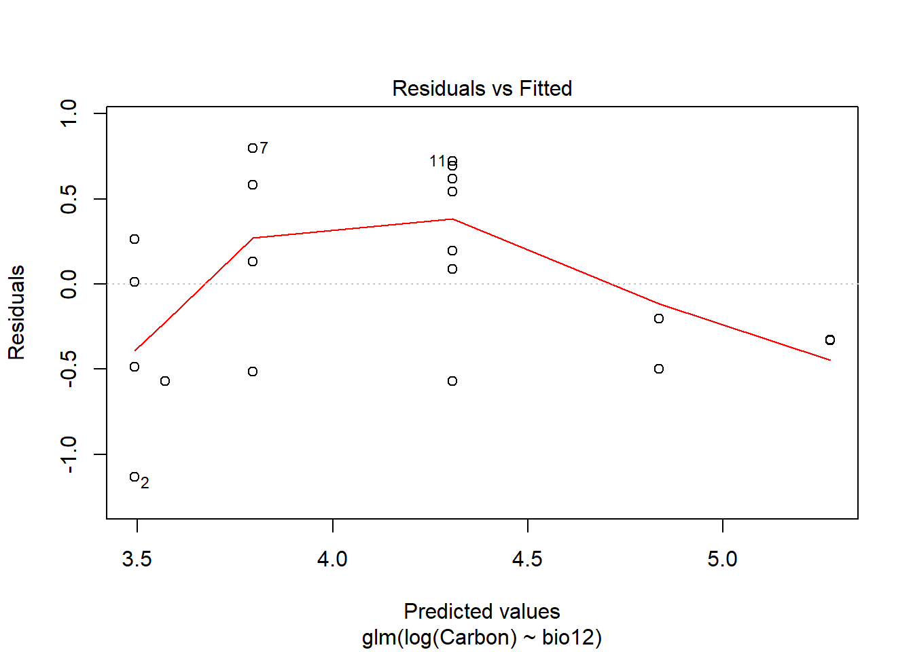

ggplot(data=CEVI_WCL_Popa, aes(x=bio12, y = Carbon, color=as.factor(Plot_Number)))+ geom_jitter()+
labs(title = "Carbon storage and Annual Precipiation Relationship",
x= "Annual Precipiation (mm)",
y= "Carbon(t/ha)")+
theme(axis.text.x = element_text(size=7, angle = 45, vjust = 0.5),
axis.text.y = element_text(size = 7))
write.csv(CEVI_WCL_Popa, file="Data_Output/Carbon_EVI_Popa.csv", row.names = F)Load up the values extracted from the AVitabile AGB Map
Avt_Carbon_Popa <- read.csv("Data_Output/Avitabile_AGB_Popa.csv", stringsAsFactors = F)
All_Plot_info <- read.csv("Data_Output/Carbon_EVI_Popa.csv", stringsAsFactors = F)
AVt_Fieldwork <- Avt_Carbon_Popa %>% inner_join(All_Plot_info, by = "Plot_Number",suffix = c(".Avt", ".FW"), all = T) %>% rename(Lat=Lat.FW, Long = Long.FW) %>% dplyr::select(-c(Lat.Avt, Long.Avt))
ggplot(data=AVt_Fieldwork, aes(x=Mean_Avt_Carbon, y = Carbon, color=as.factor(Plot_Number)))+ geom_jitter()+
labs(title = "Fieldwork Carbon storage and Avitabile Carbon Relationship",
x=expression(bold(paste("Carbon predicted by Avitabile t ", ha^bold("-1")))),
y= expression(bold(paste("Carbon calculated from 2019 fieldwork t ", ha^bold("-1")))))+
theme(axis.text.x = element_text(size=7, angle = 45, vjust = 0.5),
axis.text.y = element_text(size = 7)) Testing Different GLM Models image: 
# Field Carbon and Avitabile Carbon estimation
attach(AVt_Fieldwork)## The following object is masked _by_ .GlobalEnv:
##
## EVI2018glmgau.Avt_FW <- glm(Carbon~Mean_Avt_Carbon,data = AVt_Fieldwork, family = gaussian(link = "identity"))
summary(glmgau.Avt_FW)##
## Call:
## glm(formula = Carbon ~ Mean_Avt_Carbon, family = gaussian(link = "identity"),
## data = AVt_Fieldwork)
##
## Deviance Residuals:
## Min 1Q Median 3Q Max
## -64.109 -40.449 -5.727 36.641 74.198
##
## Coefficients:
## Estimate Std. Error t value Pr(>|t|)
## (Intercept) 109.3329 23.3576 4.681 0.000186 ***
## Mean_Avt_Carbon -0.6870 0.5075 -1.354 0.192543
## ---
## Signif. codes: 0 '***' 0.001 '**' 0.01 '*' 0.05 '.' 0.1 ' ' 1
##
## (Dispersion parameter for gaussian family taken to be 2252.094)
##
## Null deviance: 44666 on 19 degrees of freedom
## Residual deviance: 40538 on 18 degrees of freedom
## AIC: 215.04
##
## Number of Fisher Scoring iterations: 2plot(glmgau.Avt_FW)


glmgamma.Avt_FW <- glm(Carbon~Mean_Avt_Carbon,data = AVt_Fieldwork, family = Gamma(link = "log"))
summary(glmgamma.Avt_FW)##
## Call:
## glm(formula = Carbon ~ Mean_Avt_Carbon, family = Gamma(link = "log"),
## data = AVt_Fieldwork)
##
## Deviance Residuals:
## Min 1Q Median 3Q Max
## -1.48081 -0.72507 -0.04872 0.41002 0.83812
##
## Coefficients:
## Estimate Std. Error t value Pr(>|t|)
## (Intercept) 4.690666 0.301207 15.573 6.87e-12 ***
## Mean_Avt_Carbon -0.007512 0.006544 -1.148 0.266
## ---
## Signif. codes: 0 '***' 0.001 '**' 0.01 '*' 0.05 '.' 0.1 ' ' 1
##
## (Dispersion parameter for Gamma family taken to be 0.3745079)
##
## Null deviance: 9.6610 on 19 degrees of freedom
## Residual deviance: 9.1096 on 18 degrees of freedom
## AIC: 214.73
##
## Number of Fisher Scoring iterations: 6plot(glmgamma.Avt_FW)AICctab(glmgamma.Avt_FW,glmgau.Avt_FW, base=T, delta = T, weights =T)## AICc dAICc df weight
## glmgamma.Avt_FW 216.2 0.0 3 0.54
## glmgau.Avt_FW 216.5 0.3 3 0.46# Carbon and mean annual precipitation
glmgau_FW_MAP <- glm(Carbon~bio12, data = AVt_Fieldwork, family = gaussian(link="identity"))
plot(glmgau_FW_MAP)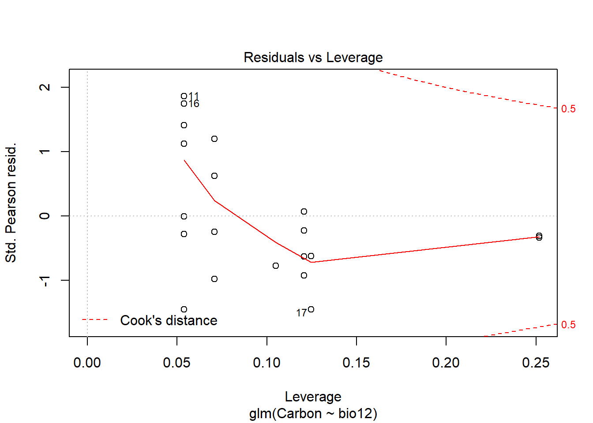
summary(glmgau_FW_MAP)##
## Call:
## glm(formula = Carbon ~ bio12, family = gaussian(link = "identity"),
## data = AVt_Fieldwork)
##
## Deviance Residuals:
## Min 1Q Median 3Q Max
## -48.641 -21.499 -8.698 24.755 62.204
##
## Coefficients:
## Estimate Std. Error t value Pr(>|t|)
## (Intercept) -163.26290 55.37096 -2.949 0.008594 **
## bio12 0.26632 0.05975 4.457 0.000304 ***
## ---
## Signif. codes: 0 '***' 0.001 '**' 0.01 '*' 0.05 '.' 0.1 ' ' 1
##
## (Dispersion parameter for gaussian family taken to be 1179.493)
##
## Null deviance: 44666 on 19 degrees of freedom
## Residual deviance: 21231 on 18 degrees of freedom
## AIC: 202.11
##
## Number of Fisher Scoring iterations: 2glmgamma_FW_MAP <- glm(Carbon~bio12, data = AVt_Fieldwork, family = Gamma(link = "log"))
plot(glmgamma_FW_MAP)summary(glmgamma_FW_MAP)##
## Call:
## glm(formula = Carbon ~ bio12, family = Gamma(link = "log"), data = AVt_Fieldwork)
##
## Deviance Residuals:
## Min 1Q Median 3Q Max
## -1.0824 -0.5528 -0.1014 0.4507 0.7106
##
## Coefficients:
## Estimate Std. Error t value Pr(>|t|)
## (Intercept) 0.5908039 0.8534611 0.692 0.497618
## bio12 0.0040316 0.0009209 4.378 0.000363 ***
## ---
## Signif. codes: 0 '***' 0.001 '**' 0.01 '*' 0.05 '.' 0.1 ' ' 1
##
## (Dispersion parameter for Gamma family taken to be 0.2802198)
##
## Null deviance: 9.6610 on 19 degrees of freedom
## Residual deviance: 5.4435 on 18 degrees of freedom
## AIC: 203.83
##
## Number of Fisher Scoring iterations: 7# Carbon and Annual Mean Temperature (AMT-bio01)
glmgau_FW_AMT <- glm(Carbon~bio01, data = AVt_Fieldwork, family = gaussian(link="identity"))
plot(glmgau_FW_AMT)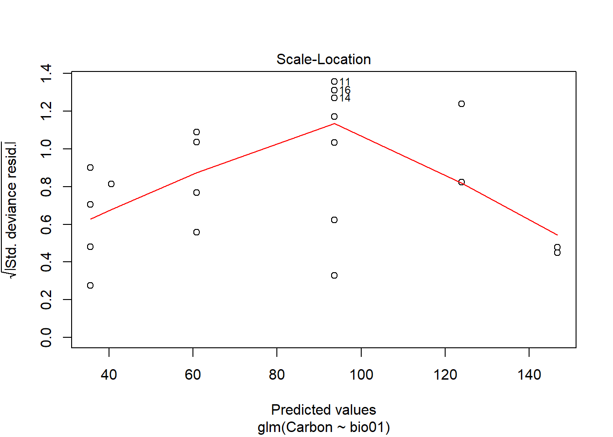
summary(glmgau_FW_AMT)##
## Call:
## glm(formula = Carbon ~ bio01, family = gaussian(link = "identity"),
## data = AVt_Fieldwork)
##
## Deviance Residuals:
## Min 1Q Median 3Q Max
## -51.771 -20.685 -6.304 22.686 59.074
##
## Coefficients:
## Estimate Std. Error t value Pr(>|t|)
## (Intercept) 672.1558 123.9338 5.424 3.75e-05 ***
## bio01 -2.5262 0.5288 -4.777 0.000151 ***
## ---
## Signif. codes: 0 '***' 0.001 '**' 0.01 '*' 0.05 '.' 0.1 ' ' 1
##
## (Dispersion parameter for gaussian family taken to be 1094.178)
##
## Null deviance: 44666 on 19 degrees of freedom
## Residual deviance: 19695 on 18 degrees of freedom
## AIC: 200.61
##
## Number of Fisher Scoring iterations: 2glmgamma_FW_AMT <- glm(Carbon~bio01, data = AVt_Fieldwork, family = Gamma(link = "log"))
plot(glmgamma_FW_AMT)summary(glmgamma_FW_AMT)##
## Call:
## glm(formula = Carbon ~ bio01, family = Gamma(link = "log"), data = AVt_Fieldwork)
##
## Deviance Residuals:
## Min 1Q Median 3Q Max
## -1.00761 -0.52264 -0.06855 0.41546 0.70670
##
## Coefficients:
## Estimate Std. Error t value Pr(>|t|)
## (Intercept) 13.501437 1.885658 7.16 1.15e-06 ***
## bio01 -0.039426 0.008046 -4.90 0.000115 ***
## ---
## Signif. codes: 0 '***' 0.001 '**' 0.01 '*' 0.05 '.' 0.1 ' ' 1
##
## (Dispersion parameter for Gamma family taken to be 0.2532996)
##
## Null deviance: 9.6610 on 19 degrees of freedom
## Residual deviance: 4.9102 on 18 degrees of freedom
## AIC: 201.68
##
## Number of Fisher Scoring iterations: 7AICctab(glmgau_FW_AMT,glmgamma_FW_AMT, base=T, delta = T, weights =T)## AICc dAICc df weight
## glmgau_FW_AMT 202.1 0.0 3 0.63
## glmgamma_FW_AMT 203.2 1.1 3 0.37summary(glmgau_FW_AMT) # display results##
## Call:
## glm(formula = Carbon ~ bio01, family = gaussian(link = "identity"),
## data = AVt_Fieldwork)
##
## Deviance Residuals:
## Min 1Q Median 3Q Max
## -51.771 -20.685 -6.304 22.686 59.074
##
## Coefficients:
## Estimate Std. Error t value Pr(>|t|)
## (Intercept) 672.1558 123.9338 5.424 3.75e-05 ***
## bio01 -2.5262 0.5288 -4.777 0.000151 ***
## ---
## Signif. codes: 0 '***' 0.001 '**' 0.01 '*' 0.05 '.' 0.1 ' ' 1
##
## (Dispersion parameter for gaussian family taken to be 1094.178)
##
## Null deviance: 44666 on 19 degrees of freedom
## Residual deviance: 19695 on 18 degrees of freedom
## AIC: 200.61
##
## Number of Fisher Scoring iterations: 2confint(glmgau_FW_AMT) # 95% CI for the coefficients## Waiting for profiling to be done...## 2.5 % 97.5 %
## (Intercept) 429.250011 915.061592
## bio01 -3.562583 -1.489723exp(coef(glmgau_FW_AMT)) # exponentiated coefficients## (Intercept) bio01
## 8.195125e+291 7.996603e-02exp(confint(glmgau_FW_AMT)) # 95% CI for exponentiated coefficients## Waiting for profiling to be done...## 2.5 % 97.5 %
## (Intercept) 2.635793e+186 Inf
## bio01 2.836545e-02 0.225435predict(glmgau_FW_AMT, type="response") # predicted values## 1 2 3 4 5 6 7
## 35.56514 35.56514 35.56514 35.56514 40.61745 60.82667 60.82667
## 8 9 10 11 12 13 14
## 60.82667 60.82667 93.66667 93.66667 93.66667 93.66667 93.66667
## 15 16 17 18 19 20
## 93.66667 93.66667 123.98051 123.98051 146.71589 146.71589residuals(glmgau_FW_AMT, type="deviance") # residuals## 1 2 3 4 5 6
## 7.091227 -25.007617 -2.327334 -15.357018 -20.569759 -34.254779
## 7 8 9 10 11 12
## 37.932666 -9.985750 18.813798 43.984158 59.073617 -12.501757
## 13 14 15 16 17 18
## -3.450743 -51.770644 34.303489 55.254027 -47.589223 -21.030147
## 19 20
## -6.691974 -5.916236Loading Last Year’s Popa datasets here to check with the field dataset I collected
First_Year_Forests <- read.csv("Data/All_data_Final.csv", stringsAsFactors = F)
Popa_Forests <- First_Year_Forests %>% filter(Forest_type!="Moist_Mixed_Deciduous_Forest")
NA_Rows <- Popa_Forests %>% filter(!complete.cases(.))
NA_Rows$Species_names[is.na(NA_Rows$Species_names)] <- "Unknown species"
NA_Rows$Genus[is.na(NA_Rows$Genus)] <- "Unknown"
NA_Rows$Species[is.na(NA_Rows$Species)] <- "species"
NA_Rows$Family[is.na(NA_Rows$Family)] <- "Unknown"
NA_Rows_Completed <- NA_Rows
Complete_Rows <- Popa_Forests %>% filter(complete.cases(.))
Popa_Forests_Full <- rbind(Complete_Rows, NA_Rows_Completed)
# Selecting the useful information from a dataframe to find out carbon with a new tree-hight model developed based on my fieldwork.
Popa_Forests_Full <- Popa_Forests_Full %>% dplyr::select(Forest_type, Plot_id, Genus, Species, Dbh_cm,Long, Lat, H_m) %>% rename(DBH_cm=Dbh_cm) %>% rename(H_ft= H_m) %>% mutate(H_m= H_ft*0.3048) %>% mutate(Year=paste(2007))Testing the DBH and Height relationship for trees—–
ggplot(data = Popa_Forests_Full, aes(DBH_cm, H_m, color = Forest_type, alpha=0.05) )+ geom_point(width=0.01)+
facet_wrap(facets = vars(Forest_type))+
labs(title = "Tree Height and Diameter Relationship in Popa Forest in 2007",
x=expression(bold(paste("DBH (cm)"))),
y= expression(bold(paste("Height (m)")))) +
theme(axis.text.x = element_text(size=7, angle = 90, vjust = 0.5),
axis.text.y = element_text(size = 7))## Warning: Ignoring unknown parameters: widthObtaining wood density
Obtaining Wood density - getWoodDensity assigns to each taxon a species- or genus-level average if at least one wood density value in the same genus as the focal taxon is available in the reference database. For unidentified trees or if the genus is missing in the reference database, the stand-level mean wood density is assigned to the tree (based on trees for which a value was attributed).
Taxo <- correctTaxo(genus= Popa_Forests_Full$Genus, species = Popa_Forests_Full$Species)
Popa_Forests_Full$genusCorr <- Taxo$genusCorrected
Popa_Forests_Full$speciesCorr <- Taxo$speciesCorrected
APG <- getTaxonomy(Popa_Forests_Full$genusCorr, findOrder =T)
Popa_Forests_Full$familyAPG <- APG$family
Popa_Forests_Full$orderAPG <- APG$order
dataWD <- getWoodDensity(genus=Popa_Forests_Full$genusCorr,
species=Popa_Forests_Full$speciesCorr,
stand=NULL, family = Popa_Forests_Full$familyAPG, region = "World")
Popa_Forests_Full <- Popa_Forests_Full %>% mutate(WD=dataWD$meanWD)Calculating the biomass of each tree
Where, D = Tree diameter (in cm), either a vector or a single value Wood density (in g/cm3), either a vector or a single value. Tree height (H in m), either a vector or a single value.
CoordsH <- cbind(Popa_Forests_Full$Long, Popa_Forests_Full$Lat)
Popa_Forests_Full <- Popa_Forests_Full %>% mutate(AGB=computeAGB(D = DBH_cm, WD = WD, H = H_m, coord = CoordsH, Dlim = NULL))
Popa_Forests_Full <- Popa_Forests_Full %>% mutate(Carbon_Mg= AGB*0.471)Data from 100 sample plots of 400 m2 (20 m × 20 m) were collected in dry mixed deciduous forest, dry dipterocap forest, dry forest and dry hill forest in Popa Mountain Park (Korea Forest Service, 2007). Diameter at breast height (DBH) and height of all trees (DBH ≥ 5 cm) were measured in each plot. Calculating the carbon per ha
Plot_Popa_Forests <- Popa_Forests_Full %>%
group_by(Plot_id,Forest_type,Long,Lat,Year) %>%
dplyr::summarise(C_Tree_total = sum(Carbon_Mg)) %>%
mutate(C_ha=C_Tree_total/0.04) %>% dplyr::select(-C_Tree_total)ggplot(data = Plot_Popa_Forests, aes(x = Forest_type, y= C_ha, color= Forest_type))+
geom_boxplot()+
labs(title = "Carbon storage per ha in four different forest types in Popa Park",
x= "Forest Type",
y= "Carbon(t/ha)")+
theme(axis.text.x = element_text(size=7, angle = 90, vjust = 0.5),
axis.text.y = element_text(size = 7)){r} # coords = cbind(Plot_Popa_Forests$Long, Plot_Popa_Forests$Lat) # llCRS <- CRS("+init=epsg:4326") # Coords_sp <- SpatialPoints(coords, proj4string = llCRS) # Coords_sp <- spTransform(Coords_sp, "+init=epsg:4326") # spdf = SpatialPointsDataFrame(Coords_sp,data = Plot_Popa_Forests) # writeOGR(spdf,"FourForests.shp", layer="Coords_sp", driver = "ESRI Shapefile")
EVI2007_Popa_4Forests <-raster("Data/EVI2007_Popa_4Forests.tif")
mypts <-readOGR("Four_Forests_shapefile/FourForests.shp")## OGR data source with driver: ESRI Shapefile
## Source: "D:\PhD-Web\Four_Forests_shapefile\FourForests.shp", layer: "FourForests"
## with 95 features
## It has 6 fieldsEVI2007_4Popa_Forests <- trim(EVI2007_Popa_4Forests)
plot(EVI2007_Popa_4Forests)
mydata <- raster::extract(EVI2007_Popa_4Forests, mypts)
plot(mypts, add = TRUE, cex=0.1)class(mydata)## [1] "numeric"EVI2007_values <- as.data.frame(mydata)
EVI2007 <- EVI2007_values %>% rename(EVI2007=mydata)
EVI2007_Popa_4Forests <- bind_cols(Plot_Popa_Forests,EVI2007)
EVI2007_Popa_4Forests <- EVI2007_Popa_4Forests %>% rename(Plot=Plot_id)
ggplot(data=EVI2007_Popa_4Forests, aes(x=EVI2007, y = C_ha, color=as.factor(Forest_type)))+ geom_point()+
facet_wrap(facets = vars(Forest_type))+
labs(title = "Forest Carbon and EVI Relationship in Popa Park in 2007",
x=expression(bold(paste("Median EVI in 2007"))),
y= expression(bold(paste("Carbon calculated from fieldwork of 2007 t ", ha^bold("-1")))))+
theme(axis.text.x = element_text(size=7, angle = 90, vjust = 0.5),
axis.text.y = element_text(size = 7))ggplot(data=EVI2007_Popa_4Forests, aes(x=EVI2007, y = C_ha))+ geom_jitter(aes(color = Forest_type))+
labs(title = "Forest Carbon and EVI Relationship in Popa Park in 2007",
x=expression(bold(paste("Median EVI in 2007"))),
y= expression(bold(paste("Carbon calculated from fieldwork of 2007 t ", ha^bold("-1")))))+
theme(axis.text.x = element_text(size=7, angle = 90, vjust = 0.5),
axis.text.y = element_text(size = 7))Carbon stocks (2007) and environmental conditions relationship
BIO1 = Annual Mean Temperature
BIO2 = Mean Diurnal Range (Mean of monthly (max temp - min temp))
BIO3 = Isothermality (BIO2/BIO7) (* 100)
BIO4 = Temperature Seasonality (standard deviation *100)
BIO5 = Max Temperature of Warmest Month
BIO6 = Min Temperature of Coldest Month
BIO7 = Temperature Annual Range (BIO5-BIO6)
BIO8 = Mean Temperature of Wettest Quarter
BIO9 = Mean Temperature of Driest Quarter
BIO10 = Mean Temperature of Warmest Quarter
BIO11 = Mean Temperature of Coldest Quarter
BIO12 = Annual Precipitation
BIO13 = Precipitation of Wettest Month
BIO14 = Precipitation of Driest Month
BIO15 = Precipitation Seasonality (Coefficient of Variation)
BIO16 = Precipitation of Wettest Quarter
BIO17 = Precipitation of Driest Quarter
BIO18 = Precipitation of Warmest Quarter
BIO19 = Precipitation of Coldest Quarter
I performed a simple liner regression analysis on the two variables Carbon and Annual precipitaion(AP)_Bio12/Annual Mean Temperature(AMT)_Bio01. I wish to determine wheter the AP/AMT varible is a significant predictor of the Carbon Variable.
WCL_Popa_4Forests <- read.csv("Data_Output/WCL_Popa_4Forests.csv", stringsAsFactors = F)
plot(C_ha~bio01, data = WCL_Popa_4Forests)
glm.AMT <- glm(log(C_ha)~bio01,data=WCL_Popa_4Forests, family = gaussian(link = "identity"))
summary(glm.AMT)##
## Call:
## glm(formula = log(C_ha) ~ bio01, family = gaussian(link = "identity"),
## data = WCL_Popa_4Forests)
##
## Deviance Residuals:
## Min 1Q Median 3Q Max
## -1.71754 -0.49536 -0.01265 0.45180 1.92326
##
## Coefficients:
## Estimate Std. Error t value Pr(>|t|)
## (Intercept) 0.481359 1.008309 0.477 0.63420
## bio01 0.014333 0.004257 3.367 0.00111 **
## ---
## Signif. codes: 0 '***' 0.001 '**' 0.01 '*' 0.05 '.' 0.1 ' ' 1
##
## (Dispersion parameter for gaussian family taken to be 0.4898238)
##
## Null deviance: 51.106 on 94 degrees of freedom
## Residual deviance: 45.554 on 93 degrees of freedom
## AIC: 205.77
##
## Number of Fisher Scoring iterations: 2plot(glm.AMT)ggplot(data=WCL_Popa_4Forests, aes(x=bio01, y = C_ha, color=as.factor(Forest_type)))+ geom_jitter()+
labs(title = "Forest Carbon and Annual Mean Temperature Relationship in Popa Park in 2007",
x=expression(bold(paste("Annual Mean Temperature(°C)"))),
y= expression(bold(paste("Carbon calculated from 2007 fieldwork t ", ha^bold("-1")))))+
theme(axis.text.x = element_text(size=7, angle = 45, vjust = 0.5),
axis.text.y = element_text(size = 7))plot(C_ha~bio12, data = WCL_Popa_4Forests)
glm.AMT <- glm(log(C_ha)~bio12,data=WCL_Popa_4Forests, family = gaussian(link = "identity"))
summary(glm.AMT)##
## Call:
## glm(formula = log(C_ha) ~ bio12, family = gaussian(link = "identity"),
## data = WCL_Popa_4Forests)
##
## Deviance Residuals:
## Min 1Q Median 3Q Max
## -1.63867 -0.51883 -0.01014 0.41605 1.89229
##
## Coefficients:
## Estimate Std. Error t value Pr(>|t|)
## (Intercept) 5.1428564 0.4442976 11.575 < 2e-16 ***
## bio12 -0.0014065 0.0004834 -2.909 0.00453 **
## ---
## Signif. codes: 0 '***' 0.001 '**' 0.01 '*' 0.05 '.' 0.1 ' ' 1
##
## (Dispersion parameter for gaussian family taken to be 0.5036872)
##
## Null deviance: 51.106 on 94 degrees of freedom
## Residual deviance: 46.843 on 93 degrees of freedom
## AIC: 208.43
##
## Number of Fisher Scoring iterations: 2plot(glm.AMT)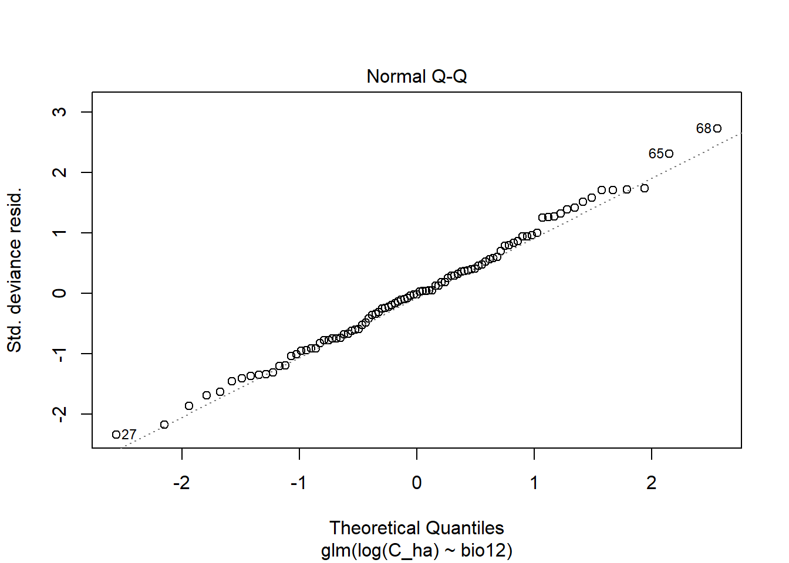
ggplot(data=WCL_Popa_4Forests, aes(x=bio12, y = C_ha, color=as.factor(Forest_type)))+ geom_jitter()+
labs(title = "Forest Carbon and Annual Precipiation Relationship in Popa Park in 2007",
x=expression(bold(paste("Annual precipitation(mm)"))),
y= expression(bold(paste("Carbon calculated from 2007 fieldwork t ", ha^bold("-1")))))+
theme(axis.text.x = element_text(size=7, angle = 45, vjust = 0.5),
axis.text.y = element_text(size = 7))
Fieldwork Carbon (2007) and Avitabile carbon projection
Avt_Carbon_Popa_4Forests <- read.csv("Data_Output/Avitabile_AGB_Popa_4Forests.csv", stringsAsFactors = F)
Avt_Carbon_Popa_4Forests <- Avt_Carbon_Popa_4Forests %>% rename(Avt_Carbon = mean)
All_4_Forests_info <- WCL_Popa_4Forests %>% inner_join(dplyr:: select(Avt_Carbon_Popa_4Forests,Avt_Carbon, Plot_id), by = "Plot_id", all = T)
plot(C_ha~Avt_Carbon, data = All_4_Forests_info)glm.Avt_4Forests <- glm(C_ha~Avt_Carbon,data = All_4_Forests_info, family = gaussian(link = "identity"))
summary(glm.Avt_4Forests)##
## Call:
## glm(formula = C_ha ~ Avt_Carbon, family = gaussian(link = "identity"),
## data = All_4_Forests_info)
##
## Deviance Residuals:
## Min 1Q Median 3Q Max
## -64.35 -32.35 -14.03 15.89 150.70
##
## Coefficients:
## Estimate Std. Error t value Pr(>|t|)
## (Intercept) 83.2198 14.0114 5.939 4.68e-08 ***
## Avt_Carbon -0.1956 0.1194 -1.639 0.105
## ---
## Signif. codes: 0 '***' 0.001 '**' 0.01 '*' 0.05 '.' 0.1 ' ' 1
##
## (Dispersion parameter for gaussian family taken to be 2251.253)
##
## Null deviance: 219913 on 96 degrees of freedom
## Residual deviance: 213869 on 95 degrees of freedom
## AIC: 1028
##
## Number of Fisher Scoring iterations: 2plot(glm.Avt_4Forests)

ggplot(data=All_4_Forests_info, aes(x=Avt_Carbon, y = C_ha, color=as.factor(Forest_type)))+ geom_jitter()+
labs(title = "2007 Fieldwork Carbon storage and Avitabile Carbon Relationship in Popa Park",
x=expression(bold(paste("Carbon predicted by Avitabile t ", ha^bold("-1")))),
y= expression(bold(paste("Carbon calculated from 2007 fieldwork t ", ha^bold("-1")))))+
theme(axis.text.x = element_text(size=7, angle = 45, vjust = 0.5),
axis.text.y = element_text(size = 7))Testing Different GLM Models
image:
# Field Carbon and Avitabile Carbon estimation
attach(All_4_Forests_info)## The following objects are masked from AVt_Fieldwork:
##
## bio01, bio02, bio03, bio04, bio05, bio06, bio07, bio08, bio09,
## bio10, bio11, bio12, bio13, bio14, bio15, bio16, bio17, bio18,
## bio19, Lat, Longglmgau.Avt_4F <- glm(C_ha~Avt_Carbon,data = All_4_Forests_info, family = gaussian(link = "identity"))
summary(glmgau.Avt_4F)##
## Call:
## glm(formula = C_ha ~ Avt_Carbon, family = gaussian(link = "identity"),
## data = All_4_Forests_info)
##
## Deviance Residuals:
## Min 1Q Median 3Q Max
## -64.35 -32.35 -14.03 15.89 150.70
##
## Coefficients:
## Estimate Std. Error t value Pr(>|t|)
## (Intercept) 83.2198 14.0114 5.939 4.68e-08 ***
## Avt_Carbon -0.1956 0.1194 -1.639 0.105
## ---
## Signif. codes: 0 '***' 0.001 '**' 0.01 '*' 0.05 '.' 0.1 ' ' 1
##
## (Dispersion parameter for gaussian family taken to be 2251.253)
##
## Null deviance: 219913 on 96 degrees of freedom
## Residual deviance: 213869 on 95 degrees of freedom
## AIC: 1028
##
## Number of Fisher Scoring iterations: 2plot(glmgau.Avt_4F)


glmgamma.Avt_4F <- glm(C_ha~Avt_Carbon,data = All_4_Forests_info, family = Gamma(link = "log"))
summary(glmgamma.Avt_4F)##
## Call:
## glm(formula = C_ha ~ Avt_Carbon, family = Gamma(link = "log"),
## data = All_4_Forests_info)
##
## Deviance Residuals:
## Min 1Q Median 3Q Max
## -1.4920 -0.6574 -0.2535 0.2878 1.5806
##
## Coefficients:
## Estimate Std. Error t value Pr(>|t|)
## (Intercept) 4.613265 0.219465 21.021 <2e-16 ***
## Avt_Carbon -0.004574 0.001870 -2.446 0.0163 *
## ---
## Signif. codes: 0 '***' 0.001 '**' 0.01 '*' 0.05 '.' 0.1 ' ' 1
##
## (Dispersion parameter for Gamma family taken to be 0.5523218)
##
## Null deviance: 52.694 on 96 degrees of freedom
## Residual deviance: 50.284 on 95 degrees of freedom
## AIC: 972.76
##
## Number of Fisher Scoring iterations: 6plot(glmgamma.Avt_4F)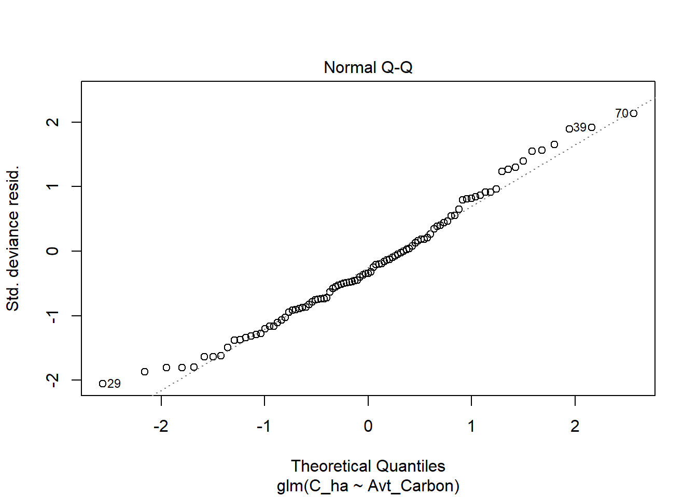
AICctab(glmgamma.Avt_4F,glmgau.Avt_4F, base=T, delta = T, weights =T)## AICc dAICc df weight
## glmgamma.Avt_4F 973.0 0.0 3 1
## glmgau.Avt_4F 1028.3 55.3 3 <0.001# C_ha and mean annual precipitation
glmgau_4F_MAP <- glm(C_ha~bio12, data = All_4_Forests_info, family = gaussian(link="identity"))
plot(glmgau_4F_MAP)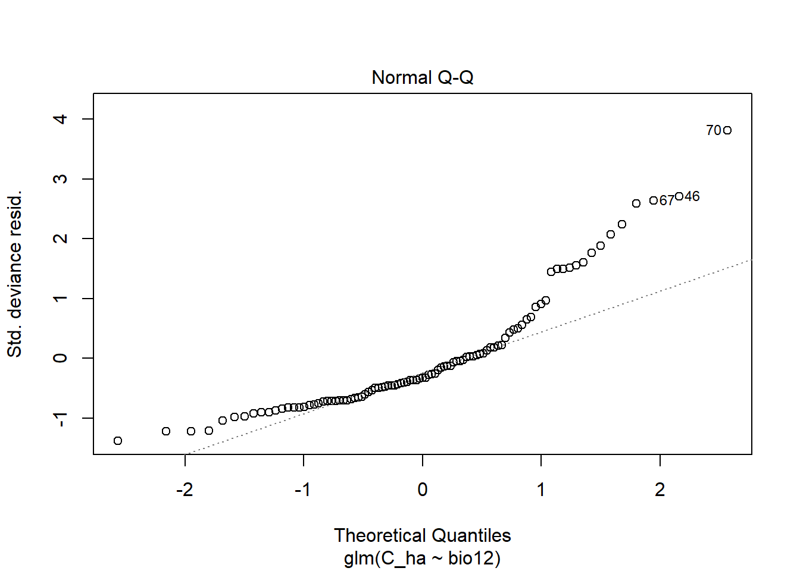
summary(glmgau_4F_MAP)##
## Call:
## glm(formula = C_ha ~ bio12, family = gaussian(link = "identity"),
## data = All_4_Forests_info)
##
## Deviance Residuals:
## Min 1Q Median 3Q Max
## -63.63 -32.45 -15.06 10.02 173.44
##
## Coefficients:
## Estimate Std. Error t value Pr(>|t|)
## (Intercept) 133.82448 29.00565 4.614 1.24e-05 ***
## bio12 -0.07975 0.03163 -2.522 0.0133 *
## ---
## Signif. codes: 0 '***' 0.001 '**' 0.01 '*' 0.05 '.' 0.1 ' ' 1
##
## (Dispersion parameter for gaussian family taken to be 2169.654)
##
## Null deviance: 219913 on 96 degrees of freedom
## Residual deviance: 206117 on 95 degrees of freedom
## AIC: 1024.4
##
## Number of Fisher Scoring iterations: 2glmgamma_4F_MAP <- glm(C_ha~bio12, data = All_4_Forests_info, family = Gamma(link = "log"))
plot(glmgamma_4F_MAP)summary(glmgamma_4F_MAP)##
## Call:
## glm(formula = C_ha ~ bio12, family = Gamma(link = "log"), data = All_4_Forests_info)
##
## Deviance Residuals:
## Min 1Q Median 3Q Max
## -1.3969 -0.6648 -0.2470 0.1719 2.0850
##
## Coefficients:
## Estimate Std. Error t value Pr(>|t|)
## (Intercept) 5.0548209 0.4929371 10.254 <2e-16 ***
## bio12 -0.0010485 0.0005375 -1.951 0.054 .
## ---
## Signif. codes: 0 '***' 0.001 '**' 0.01 '*' 0.05 '.' 0.1 ' ' 1
##
## (Dispersion parameter for Gamma family taken to be 0.6266258)
##
## Null deviance: 52.694 on 96 degrees of freedom
## Residual deviance: 49.666 on 95 degrees of freedom
## AIC: 971.46
##
## Number of Fisher Scoring iterations: 9# C_ha and Annual Mean Temperature (AMT-bio01)
glmgau_4F_AMT <- glm(C_ha~bio01, data = All_4_Forests_info, family = gaussian(link="identity"))
plot(glmgau_4F_AMT)summary(glmgau_4F_AMT)##
## Call:
## glm(formula = C_ha ~ bio01, family = gaussian(link = "identity"),
## data = All_4_Forests_info)
##
## Deviance Residuals:
## Min 1Q Median 3Q Max
## -68.55 -30.98 -15.25 12.21 175.81
##
## Coefficients:
## Estimate Std. Error t value Pr(>|t|)
## (Intercept) -135.1785 66.1465 -2.044 0.04376 *
## bio01 0.8325 0.2791 2.983 0.00362 **
## ---
## Signif. codes: 0 '***' 0.001 '**' 0.01 '*' 0.05 '.' 0.1 ' ' 1
##
## (Dispersion parameter for gaussian family taken to be 2116.59)
##
## Null deviance: 219913 on 96 degrees of freedom
## Residual deviance: 201076 on 95 degrees of freedom
## AIC: 1022
##
## Number of Fisher Scoring iterations: 2AICctab(glmgamma.Avt_4F,glmgau.Avt_4F, base=T, delta = T, weights =T)## AICc dAICc df weight
## glmgamma.Avt_4F 973.0 0.0 3 1
## glmgau.Avt_4F 1028.3 55.3 3 <0.001Loading the Fieldwork data collected in 2013 by the Forest Department
Forests <- read.csv("Data/All_data_Final.csv", stringsAsFactors = F)
names(Forests)## [1] "Forest_type" "Plot_id" "Species_names" "Genus"
## [5] "Species" "Family" "Dbh_cm" "H_m"
## [9] "WD" "AGB" "C_Tree" "BA"
## [13] "Lat" "Long" "Northing" "Easting"
## [17] "Tenure"Forests <- filter(Forests,!is.na(Species_names) & !is.na(Dbh_cm))
summary(Forests)## Forest_type Plot_id Species_names Genus
## Length:4444 Min. : 1.00 Length:4444 Length:4444
## Class :character 1st Qu.: 23.00 Class :character Class :character
## Mode :character Median : 53.00 Mode :character Mode :character
## Mean : 55.69
## 3rd Qu.: 89.00
## Max. :119.00
## Species Family Dbh_cm H_m
## Length:4444 Length:4444 Min. : 3.00 Min. : 0.3048
## Class :character Class :character 1st Qu.: 10.00 1st Qu.: 9.1440
## Mode :character Mode :character Median : 14.50 Median :15.2400
## Mean : 19.02 Mean :19.5457
## 3rd Qu.: 24.00 3rd Qu.:25.3049
## Max. :137.00 Max. :83.0000
## WD AGB C_Tree
## Min. :0.2200 Min. : 0.001082 Min. :0.000508
## 1st Qu.:0.6014 1st Qu.: 0.042343 1st Qu.:0.019901
## Median :0.7200 Median : 0.136046 Median :0.063941
## Mean :0.7164 Mean : 0.523717 Mean :0.246147
## 3rd Qu.:0.8500 3rd Qu.: 0.477241 3rd Qu.:0.224303
## Max. :1.0950 Max. :20.000150 Max. :9.400070
## BA Lat Long Northing
## Min. :0.000707 Min. :18.88 Min. :95.22 Min. :2089871
## 1st Qu.:0.007854 1st Qu.:20.85 1st Qu.:95.24 1st Qu.:2306949
## Median :0.016513 Median :20.89 Median :95.26 Median :2311426
## Mean :0.042563 Mean :20.66 Mean :95.34 Mean :2285967
## 3rd Qu.:0.045239 3rd Qu.:20.91 3rd Qu.:95.27 3rd Qu.:2313971
## Max. :1.474114 Max. :20.93 Max. :96.08 Max. :2316236
## Easting Tenure
## Min. :193210 Length:4444
## 1st Qu.:732675 Class :character
## Median :734513 Mode :character
## Mean :729817
## 3rd Qu.:736259
## Max. :809669unique(Forests$Forest_type)## [1] "Dipterocarpus_Forest" "Dry_Forest"
## [3] "Dry_Hill_Forest" "Dry_Mixed_Deciduous_Forest"
## [5] "Moist_Mixed_Deciduous_Forest"Moist_Mixed_Deciduous_Forest <- Forests %>% filter(Forest_type=="Moist_Mixed_Deciduous_Forest") %>% mutate(Year = paste(2013))Sampling Method
image: 
50 m * 50 m sample plot with a 25 m * 25 m nested plot. Therefore, the big dataframe was splitted into two according to the DBH limit measured in the 50m * 50m subplot. (25m x 25m and 50m x 50m)
MMDF_50m <- Moist_Mixed_Deciduous_Forest %>% filter(Dbh_cm >= 20)
MMDF_25m <- Moist_Mixed_Deciduous_Forest %>% filter(Dbh_cm < 20)** Calculating the carbon per ha for two different size plots**
Plot_50M <- MMDF_50m %>%
group_by(Plot_id,Forest_type,Year, Long, Lat) %>%
dplyr::summarise(C_Tree_total = sum(C_Tree)) %>%
mutate(C_ha=C_Tree_total/0.25) %>% dplyr::select(-C_Tree_total)
Plot_25M <- MMDF_25m %>%
group_by(Plot_id,Forest_type,Year, Long, Lat) %>%
dplyr::summarise(C_Tree_total = sum(C_Tree)) %>%
mutate(C_ha=C_Tree_total/0.0625) %>% dplyr::select(-C_Tree_total)Combining two dataframes of different plot size according to Plot names.Carbon per hectare columns of the two dataframes were added together to obtain total carbon of each plot in hectare scale.
MMDF <- bind_rows(Plot_25M,Plot_50M) %>% group_by(Plot_id,Forest_type,Year, Long, Lat) %>% summarise(C_ha=sum(C_ha))Creating a shape file of the plot locations
coords = cbind(MMDF$Long, MMDF$Lat)
llCRS <- CRS("+init=epsg:4326")
Coords_sp <- SpatialPoints(coords, proj4string = llCRS)
Coords_sp <- spTransform(Coords_sp, "+init=epsg:4326")
spdf = SpatialPointsDataFrame(Coords_sp,data = MMDF)
writeOGR(spdf,"MMDF_2013.shp", layer="Coords_sp", driver = "ESRI Shapefile")## Warning in writeOGR(spdf, "MMDF_2013.shp", layer = "Coords_sp", driver =
## "ESRI Shapefile"): Field names abbreviated for ESRI Shapefile driverEnhanced Vegetation Index and Carbon from 2013 forest inventory
EVI2013_MMDF <-raster("Data/EVI_MMDF_2013.tif")
mypts <-readOGR("MMDF_2013_shapefiles/MMDF_2013.shp")## OGR data source with driver: ESRI Shapefile
## Source: "D:\PhD-Web\MMDF_2013_shapefiles\MMDF_2013.shp", layer: "MMDF_2013"
## with 18 features
## It has 6 fieldsEVI2013_MMDF <- trim(EVI2013_MMDF)
plot(EVI2013_MMDF)
mydata <- raster::extract(EVI2013_MMDF, mypts)
plot(mypts, add = TRUE, cex=0.1)class(mydata)## [1] "numeric"EVI2013_values <- as.data.frame(mydata)
EVI2013 <- EVI2013_values %>% rename(EVI2013=mydata)
EVI2013_MMDF <- bind_cols(MMDF,EVI2013)
EVI2013_MMDF <- EVI2013_MMDF %>% rename(Plot=Plot_id)
ggplot(data=EVI2013_MMDF, aes(x=EVI2013, y = C_ha, color = as.factor(Plot)))+ geom_jitter()+
labs(title = "Forest Carbon and EVI Relationship in Bago Region in 2013",
x=expression(bold(paste("Median EVI Values in 2013"))),
y= expression(bold(paste("Carbon calculated from fieldwork of 2013 t ", ha^bold("-1")))))+
theme(axis.text.x = element_text(size=7, angle = 90, vjust = 0.5),
axis.text.y = element_text(size = 7))Normalised Vegetation Index and Carbon from 2013 forest inventory
NDVI2013_MMDF <-raster("Data/NDVI_MMDF_2013.tif")
mypts <-readOGR("MMDF_2013_shapefiles/MMDF_2013.shp")## OGR data source with driver: ESRI Shapefile
## Source: "D:\PhD-Web\MMDF_2013_shapefiles\MMDF_2013.shp", layer: "MMDF_2013"
## with 18 features
## It has 6 fieldsNDVI2013_MMDF <- trim(NDVI2013_MMDF)
plot(NDVI2013_MMDF)
mydata <- raster::extract(NDVI2013_MMDF, mypts)
plot(mypts, add = TRUE, cex=0.1)class(mydata)## [1] "numeric"NDVI2013_values <- as.data.frame(mydata)
NDVI2013 <- NDVI2013_values %>% rename(NDVI2013=mydata)
NDVI2013_MMDF <- bind_cols(EVI2013_MMDF,NDVI2013)
ggplot(data=NDVI2013_MMDF, aes(x=NDVI2013, y = C_ha, color = as.factor(Plot)))+ geom_jitter()+
labs(title = "Forest Carbon and NDVI Relationship in Bago Region in 2013",
x=expression(bold(paste("Median NDVI Values in 2013"))),
y= expression(bold(paste("Carbon calculated from fieldwork of 2013 t ", ha^bold("-1")))))+
theme(axis.text.x = element_text(size=7, angle = 90, vjust = 0.5),
axis.text.y = element_text(size = 7))Carbon stocks (2013) and environmental conditions relationship
BIO1 = Annual Mean Temperature
BIO2 = Mean Diurnal Range (Mean of monthly (max temp - min temp))
BIO3 = Isothermality (BIO2/BIO7) (* 100)
BIO4 = Temperature Seasonality (standard deviation *100)
BIO5 = Max Temperature of Warmest Month
BIO6 = Min Temperature of Coldest Month
BIO7 = Temperature Annual Range (BIO5-BIO6)
BIO8 = Mean Temperature of Wettest Quarter
BIO9 = Mean Temperature of Driest Quarter
BIO10 = Mean Temperature of Warmest Quarter
BIO11 = Mean Temperature of Coldest Quarter
BIO12 = Annual Precipitation
BIO13 = Precipitation of Wettest Month
BIO14 = Precipitation of Driest Month
BIO15 = Precipitation Seasonality (Coefficient of Variation)
BIO16 = Precipitation of Wettest Quarter
BIO17 = Precipitation of Driest Quarter
BIO18 = Precipitation of Warmest Quarter
BIO19 = Precipitation of Coldest Quarter
I performed a simple liner regression analysis on the two variables Carbon and Annual precipitaion(AP)_Bio12/Annual Mean Temperature(AMT)_Bio01. I wish to determine wheter the AP/AMT varible is a significant predictor of the Carbon Variable.
WCL_MMDF_2013 <- read.csv("Data_Output/WCL_MMDF_2013.csv", stringsAsFactors = F)
plot(C_ha~bio01, data = WCL_MMDF_2013)glm.AMT <- glm(log(C_ha)~bio01,data=WCL_MMDF_2013, family = gaussian(link = "identity"))
summary(glm.AMT)##
## Call:
## glm(formula = log(C_ha) ~ bio01, family = gaussian(link = "identity"),
## data = WCL_MMDF_2013)
##
## Deviance Residuals:
## Min 1Q Median 3Q Max
## -0.48016 -0.29706 0.02114 0.24315 0.45734
##
## Coefficients:
## Estimate Std. Error t value Pr(>|t|)
## (Intercept) 36.18304 5.27673 6.857 3.85e-06 ***
## bio01 -0.12394 0.02047 -6.054 1.67e-05 ***
## ---
## Signif. codes: 0 '***' 0.001 '**' 0.01 '*' 0.05 '.' 0.1 ' ' 1
##
## (Dispersion parameter for gaussian family taken to be 0.08953085)
##
## Null deviance: 4.7137 on 17 degrees of freedom
## Residual deviance: 1.4325 on 16 degrees of freedom
## AIC: 11.525
##
## Number of Fisher Scoring iterations: 2plot(glm.AMT)
ggplot(data=WCL_MMDF_2013, aes(x=bio01, y = C_ha, color=as.factor(Forest_type)))+ geom_jitter()+
labs(title = "Forest Carbon and Annual Mean Temperature Relationship in Bago Region in 2013",
x=expression(bold(paste("Annual Mean Temperature(°C)"))),
y= expression(bold(paste("Carbon calculated from 2013 fieldwork t ", ha^bold("-1")))))+
theme(axis.text.x = element_text(size=7, angle = 45, vjust = 0.5),
axis.text.y = element_text(size = 7))plot(C_ha~bio12, data = WCL_MMDF_2013)glm.AMT <- glm(log(C_ha)~bio12,data=WCL_MMDF_2013, family = gaussian(link = "identity"))
summary(glm.AMT)##
## Call:
## glm(formula = log(C_ha) ~ bio12, family = gaussian(link = "identity"),
## data = WCL_MMDF_2013)
##
## Deviance Residuals:
## Min 1Q Median 3Q Max
## -0.9622 -0.3348 0.1837 0.3981 0.7307
##
## Coefficients:
## Estimate Std. Error t value Pr(>|t|)
## (Intercept) 3.1810151 1.0356847 3.071 0.0073 **
## bio12 0.0008596 0.0008336 1.031 0.3178
## ---
## Signif. codes: 0 '***' 0.001 '**' 0.01 '*' 0.05 '.' 0.1 ' ' 1
##
## (Dispersion parameter for gaussian family taken to be 0.2762496)
##
## Null deviance: 4.7137 on 17 degrees of freedom
## Residual deviance: 4.4200 on 16 degrees of freedom
## AIC: 31.806
##
## Number of Fisher Scoring iterations: 2plot(glm.AMT)ggplot(data=WCL_MMDF_2013, aes(x=bio12, y = C_ha, color=as.factor(Forest_type)))+ geom_jitter()+
labs(title = "Forest Carbon and Annual Precipiation Relationship in Bago Region in 2013",
x=expression(bold(paste("Annual precipitation(mm)"))),
y= expression(bold(paste("Carbon calculated from 2013 fieldwork t ", ha^bold("-1")))))+
theme(axis.text.x = element_text(size=7, angle = 45, vjust = 0.5),
axis.text.y = element_text(size = 7))Fieldwork Carbon (2013) and Avitabile carbon projection
Avt_Carbon_MMDF <- read.csv("Data_Output/Avitabile_AGB_MMDF.csv", stringsAsFactors = F)
MMDF_info <- WCL_MMDF_2013 %>% inner_join(dplyr:: select(Avt_Carbon_MMDF,Avt_Carbon, Plot_id), by = "Plot_id", all = T)
plot(C_ha~Avt_Carbon, data = MMDF_info)glm.Avt_4Forests <- glm(C_ha~Avt_Carbon,data = MMDF_info, family = gaussian(link = "identity"))
summary(glm.Avt_4Forests)##
## Call:
## glm(formula = C_ha ~ Avt_Carbon, family = gaussian(link = "identity"),
## data = MMDF_info)
##
## Deviance Residuals:
## Min 1Q Median 3Q Max
## -44.819 -23.385 2.822 18.294 77.620
##
## Coefficients:
## Estimate Std. Error t value Pr(>|t|)
## (Intercept) 37.4555 21.2331 1.764 0.0968 .
## Avt_Carbon 0.8356 0.4042 2.067 0.0553 .
## ---
## Signif. codes: 0 '***' 0.001 '**' 0.01 '*' 0.05 '.' 0.1 ' ' 1
##
## (Dispersion parameter for gaussian family taken to be 1101.247)
##
## Null deviance: 22325 on 17 degrees of freedom
## Residual deviance: 17620 on 16 degrees of freedom
## AIC: 181.04
##
## Number of Fisher Scoring iterations: 2plot(glm.Avt_4Forests)

ggplot(data=MMDF_info, aes(x=Avt_Carbon, y = C_ha, color=as.factor(Plot_id)))+ geom_jitter()+
labs(title = "2013 Fieldwork Carbon storage and Avitabile Carbon Relationship in Bago Region",
x=expression(bold(paste("Carbon predicted by Avitabile t ", ha^bold("-1")))),
y= expression(bold(paste("Carbon calculated from 2013 fieldwork t ", ha^bold("-1")))))+
theme(axis.text.x = element_text(size=7, angle = 45, vjust = 0.5),
axis.text.y = element_text(size = 7))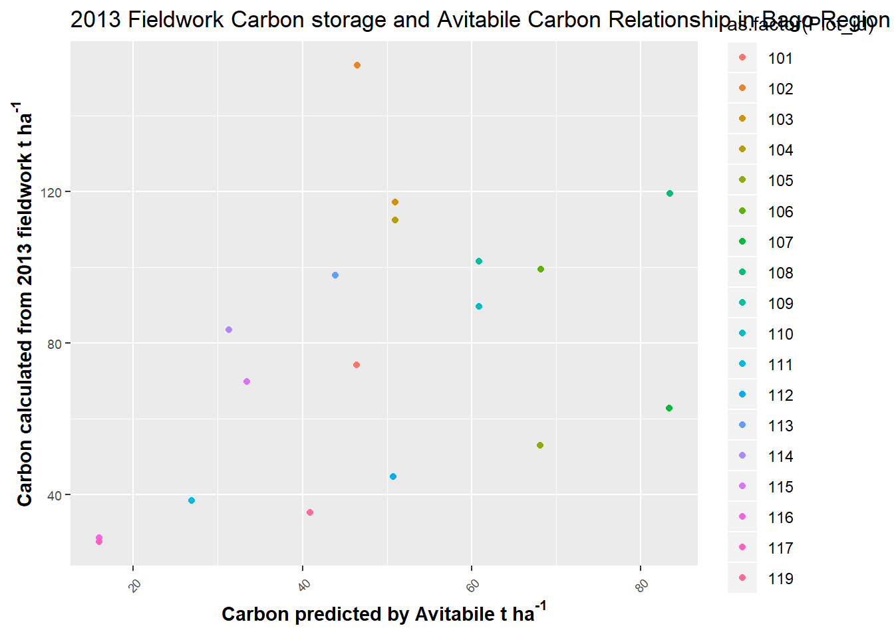 All these plots are in one ecoregion published by WWF
Testing Different GLM Models image:
# Field Carbon (2013) and Avitabile Carbon estimation
glmgau.MMDF_info <- glm(C_ha~Avt_Carbon,data = MMDF_info, family = gaussian(link = "identity"))
summary(glmgau.MMDF_info)##
## Call:
## glm(formula = C_ha ~ Avt_Carbon, family = gaussian(link = "identity"),
## data = MMDF_info)
##
## Deviance Residuals:
## Min 1Q Median 3Q Max
## -44.819 -23.385 2.822 18.294 77.620
##
## Coefficients:
## Estimate Std. Error t value Pr(>|t|)
## (Intercept) 37.4555 21.2331 1.764 0.0968 .
## Avt_Carbon 0.8356 0.4042 2.067 0.0553 .
## ---
## Signif. codes: 0 '***' 0.001 '**' 0.01 '*' 0.05 '.' 0.1 ' ' 1
##
## (Dispersion parameter for gaussian family taken to be 1101.247)
##
## Null deviance: 22325 on 17 degrees of freedom
## Residual deviance: 17620 on 16 degrees of freedom
## AIC: 181.04
##
## Number of Fisher Scoring iterations: 2plot(glmgau.MMDF_info)

glmgamma.MMDF_info <- glm(C_ha~Avt_Carbon,data = MMDF_info, family = Gamma(link = "log"))
summary(glmgamma.MMDF_info)##
## Call:
## glm(formula = C_ha ~ Avt_Carbon, family = Gamma(link = "log"),
## data = MMDF_info)
##
## Deviance Residuals:
## Min 1Q Median 3Q Max
## -0.61462 -0.50836 -0.00346 0.28553 0.84082
##
## Coefficients:
## Estimate Std. Error t value Pr(>|t|)
## (Intercept) 3.647480 0.290786 12.544 1.08e-09 ***
## Avt_Carbon 0.014021 0.005536 2.533 0.0222 *
## ---
## Signif. codes: 0 '***' 0.001 '**' 0.01 '*' 0.05 '.' 0.1 ' ' 1
##
## (Dispersion parameter for Gamma family taken to be 0.2065405)
##
## Null deviance: 4.2737 on 17 degrees of freedom
## Residual deviance: 3.2713 on 16 degrees of freedom
## AIC: 179.62
##
## Number of Fisher Scoring iterations: 6plot(glmgamma.MMDF_info)AICctab(glmgamma.MMDF_info,glmgau.MMDF_info, base=T, delta = T, weights =T)## AICc dAICc df weight
## glmgamma.MMDF_info 181.3 0.0 3 0.67
## glmgau.MMDF_info 182.8 1.4 3 0.33# Carbon and mean annual precipitation
attach(MMDF_info)## The following objects are masked from All_4_Forests_info:
##
## Avt_Carbon, bio01, bio02, bio03, bio04, bio05, bio06, bio07,
## bio08, bio09, bio10, bio11, bio12, bio13, bio14, bio15, bio16,
## bio17, bio18, bio19, C_ha, Forest_type, Lat, Long, Plot_id,
## Year## The following objects are masked from AVt_Fieldwork:
##
## bio01, bio02, bio03, bio04, bio05, bio06, bio07, bio08, bio09,
## bio10, bio11, bio12, bio13, bio14, bio15, bio16, bio17, bio18,
## bio19, Lat, Longglmgau_MMDF_MAP <- glm(C_ha~bio12, data = MMDF_info, family = gaussian(link="identity"))
plot(glmgau_MMDF_MAP)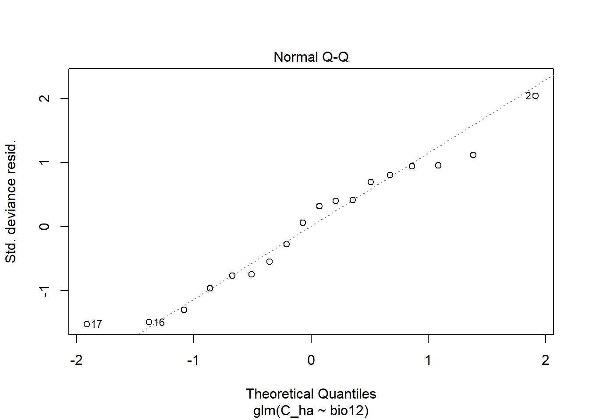
summary(glmgau_MMDF_MAP)##
## Call:
## glm(formula = C_ha ~ bio12, family = gaussian(link = "identity"),
## data = MMDF_info)
##
## Deviance Residuals:
## Min 1Q Median 3Q Max
## -52.926 -25.209 5.932 26.213 70.319
##
## Coefficients:
## Estimate Std. Error t value Pr(>|t|)
## (Intercept) -9.15890 70.23754 -0.130 0.898
## bio12 0.07087 0.05653 1.254 0.228
##
## (Dispersion parameter for gaussian family taken to be 1270.531)
##
## Null deviance: 22325 on 17 degrees of freedom
## Residual deviance: 20328 on 16 degrees of freedom
## AIC: 183.61
##
## Number of Fisher Scoring iterations: 2glmgamma_MMDF_MAP <- glm(C_ha~bio12, data = MMDF_info, family = Gamma(link = "log"))
plot(glmgamma_MMDF_MAP)summary(glmgamma_MMDF_MAP)##
## Call:
## glm(formula = C_ha ~ bio12, family = Gamma(link = "log"), data = MMDF_info)
##
## Deviance Residuals:
## Min 1Q Median 3Q Max
## -0.91066 -0.41405 0.07679 0.30267 0.69046
##
## Coefficients:
## Estimate Std. Error t value Pr(>|t|)
## (Intercept) 3.2638077 0.8908729 3.664 0.0021 **
## bio12 0.0008814 0.0007170 1.229 0.2368
## ---
## Signif. codes: 0 '***' 0.001 '**' 0.01 '*' 0.05 '.' 0.1 ' ' 1
##
## (Dispersion parameter for Gamma family taken to be 0.2043987)
##
## Null deviance: 4.2737 on 17 degrees of freedom
## Residual deviance: 3.9496 on 16 degrees of freedom
## AIC: 183.12
##
## Number of Fisher Scoring iterations: 5# Carbon and Annual Mean Temperature (AMT-bio01)
glmgau_MMDF_AMT <- glm(C_ha~bio01, data = MMDF_info, family = gaussian(link="identity"))
plot(glmgau_MMDF_AMT)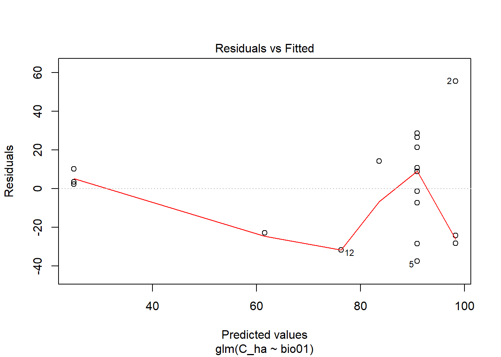
summary(glmgau_MMDF_AMT)##
## Call:
## glm(formula = C_ha ~ bio01, family = gaussian(link = "identity"),
## data = MMDF_info)
##
## Deviance Residuals:
## Min 1Q Median 3Q Max
## -37.673 -23.878 2.871 13.304 55.615
##
## Coefficients:
## Estimate Std. Error t value Pr(>|t|)
## (Intercept) 1970.189 458.464 4.297 0.000554 ***
## bio01 -7.341 1.779 -4.127 0.000790 ***
## ---
## Signif. codes: 0 '***' 0.001 '**' 0.01 '*' 0.05 '.' 0.1 ' ' 1
##
## (Dispersion parameter for gaussian family taken to be 675.8543)
##
## Null deviance: 22325 on 17 degrees of freedom
## Residual deviance: 10814 on 16 degrees of freedom
## AIC: 172.25
##
## Number of Fisher Scoring iterations: 2glmgamma_MMDF_AMT <- glm(C_ha~bio01, data = MMDF_info, family = Gamma(link = "log"))
plot(glmgamma_MMDF_AMT)summary(glmgamma_MMDF_AMT)##
## Call:
## glm(formula = C_ha ~ bio01, family = Gamma(link = "log"), data = MMDF_info)
##
## Deviance Residuals:
## Min 1Q Median 3Q Max
## -0.48292 -0.31450 -0.00723 0.21680 0.43853
##
## Coefficients:
## Estimate Std. Error t value Pr(>|t|)
## (Intercept) 37.17137 5.04870 7.363 1.60e-06 ***
## bio01 -0.12762 0.01959 -6.515 7.12e-06 ***
## ---
## Signif. codes: 0 '***' 0.001 '**' 0.01 '*' 0.05 '.' 0.1 ' ' 1
##
## (Dispersion parameter for Gamma family taken to be 0.08196006)
##
## Null deviance: 4.2737 on 17 degrees of freedom
## Residual deviance: 1.3902 on 16 degrees of freedom
## AIC: 163.9
##
## Number of Fisher Scoring iterations: 5AICctab(glmgau_MMDF_AMT,glmgamma_MMDF_AMT, base=T, delta = T, weights =T)## AICc dAICc df weight
## glmgamma_MMDF_AMT 165.6 0.0 3 0.985
## glmgau_MMDF_AMT 174.0 8.3 3 0.015summary(glmgau_MMDF_AMT) # display results##
## Call:
## glm(formula = C_ha ~ bio01, family = gaussian(link = "identity"),
## data = MMDF_info)
##
## Deviance Residuals:
## Min 1Q Median 3Q Max
## -37.673 -23.878 2.871 13.304 55.615
##
## Coefficients:
## Estimate Std. Error t value Pr(>|t|)
## (Intercept) 1970.189 458.464 4.297 0.000554 ***
## bio01 -7.341 1.779 -4.127 0.000790 ***
## ---
## Signif. codes: 0 '***' 0.001 '**' 0.01 '*' 0.05 '.' 0.1 ' ' 1
##
## (Dispersion parameter for gaussian family taken to be 675.8543)
##
## Null deviance: 22325 on 17 degrees of freedom
## Residual deviance: 10814 on 16 degrees of freedom
## AIC: 172.25
##
## Number of Fisher Scoring iterations: 2confint(glmgau_MMDF_AMT) # 95% CI for the coefficients## Waiting for profiling to be done...## 2.5 % 97.5 %
## (Intercept) 1071.61575 2868.761792
## bio01 -10.82725 -3.854684exp(coef(glmgau_MMDF_AMT)) # exponentiated coefficients## (Intercept) bio01
## Inf 0.0006484231exp(confint(glmgau_MMDF_AMT)) # 95% CI for exponentiated coefficients## Waiting for profiling to be done...## 2.5 % 97.5 %
## (Intercept) Inf Inf
## bio01 1.985111e-05 0.0211803predict(glmgau_MMDF_AMT, type="response") # predicted values## 1 2 3 4 5 6 7 8
## 98.24213 98.24213 90.90116 90.90116 90.90116 90.90116 90.90116 90.90116
## 9 10 11 12 13 14 15 16
## 90.90116 90.90116 61.53730 76.21923 83.56020 90.90116 98.24213 24.83246
## 17 18
## 24.83246 24.83246residuals(glmgau_MMDF_AMT, type="deviance") # residuals## 1 2 3 4 5 6
## -24.205217 55.615217 26.645695 21.440498 -37.673034 8.895387
## 7 8 9 10 11 12
## -28.512716 28.679073 10.698637 -1.368278 -22.896962 -31.738992
## 13 14 15 16 17 18
## 14.172978 -7.348245 -28.393922 3.435322 2.307137 10.247422